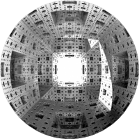
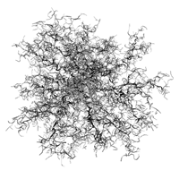
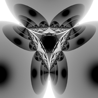
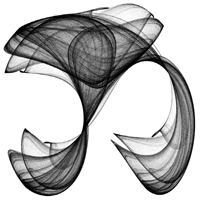
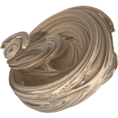
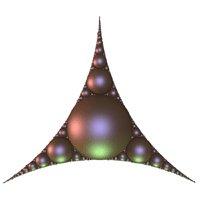

POVRay Fractal Raytracing ContestFinal ResultsMaintained by Paul Bourke
IntroductionThe aim of this competition is to create a visually compelling image of a 3D fractal form using the POVRay raytacing program. Since fractals in general can only be approximated by computer graphics, the emphasis is to create as faithful a geometric representation as possible. This is intended to be a friendly competition between POVRay aficionados and fractal enthusiasts. Over and above the respect and awe of her/his peers a prize will be awarded to the winner, namely "The Loom of God, Mathematical Tapestries at the Edge of Time" by Clifford Pickover.
Important dates
Rules
An entry to the contest will include the POVRay model, a title, and some optional comments. The only compulsory part of the entry is obviously the POVRay text, it is this file that will be rendered by POVRay at 800x800 pixels to form the image to be judged. The comments may include a description of the image, the motivation, any tricks employed, references, etc. Each entry will be rendered with the default POVRay settings along with the following ".ini" file. The image will be rendered by POVRay to a TGA file and converted to ".jpg" using the UNIX "convert" program with the quality option set to 95%. VotingVoting is open to anyone, and there will be three prizes awarded based upon the number of votes received. Each person voting will choose their three favourite images in order of preference. A first choice will get 3 points, the second will get 2 points, and the third choice 1 point. The voting process will be made as transparent as possible, however the coordinator (me) exercises the right to decide upon any matter in dispute. In addition to the above, a small panel of critics with either a professional digital arts background or with extensive fractal experience will be invited to vote independently and comment/critique entries they find notable. The members of the panel will be announced in due course. After the winners have been announced, the top ranking images, source code, and any additional information provided by the entrant will be included on a WWW page in the form of a gallery. |
      |